Flying 1,000 Miles on The Iditarod Trail - Data Visualization and Map
When March arrives in Alaska, there are two things on everyone’s mind:
- The sun is back (and out until 10 p.m.).
- The Iditarod Trail Sled Dog Race is on.
To celebrate this year, I built [a project] (https://benmatheson.github.io/irodzoom/) that fuses a map of high resolution satellite imagery with an enormous amount of checkpoint data and a few 3D effects. Ultimately a proof-of-concept that got far out of hand.
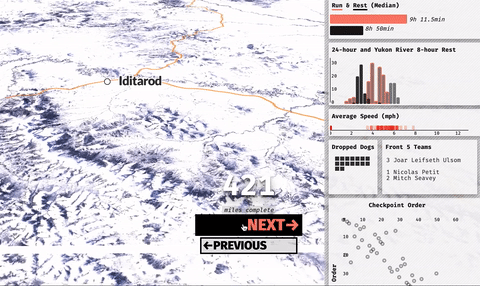
I have covered the race for Alaska public radio a couple times by travelling from checkpoint to checkpoint in a a small two-person airplane, a 50-year-old Piper Supercub.

It flies low and slow enough that you see every wet creek crossing, moose hunkered down in willows, and a few of the millions of lakes in the state.

Inspired some by the Washington Post’s superb Borderline project, I wanted to replicate a small portion of the flight experience. It’s hard to get anywhere on the trail, after it leaves the start, it’s really only access by small airplane and snowmobile.
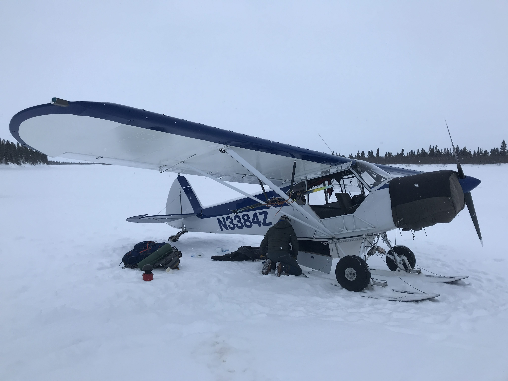
Mushing is a tough spectatory sport: due to the inacessiblility of the terrain, race fans spend money and many hours to obsessively follow the GPS tracker (myself included) during the race, the terrain and sharp beauty of Alaska’s snow-covered rivers, mountains, and frozen ocean doesn’t come through:
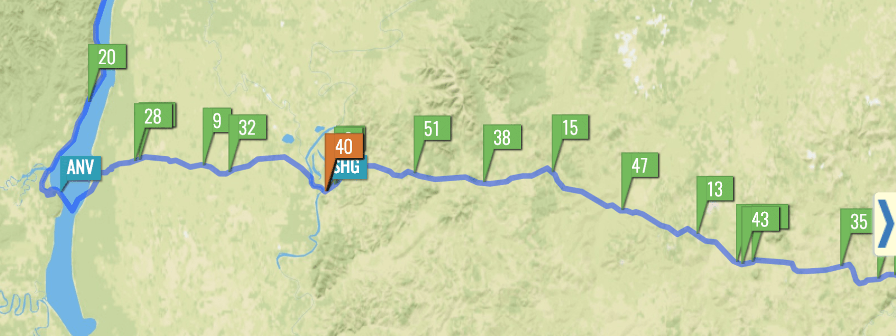
I set out to get some of the gorgeous imagery and give a small taste of the beauty of the trail.
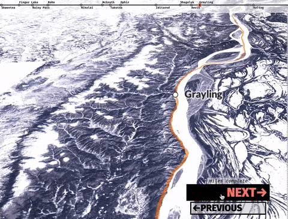
The trail is as long as a trip from New York to Florida. The Alaska landscape transforms from steep mountains to the vast Yukon River to the barren Bering Sea coastline over the course of the race.
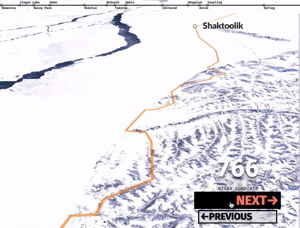
The basics:
The Iditarod is sled dog race from Willow (near Anchorage) to Nome that takes 8-11 days or so. But it’s way more. I think of it as a 4-D game of chess across 1,000 miles of wilderness trails in which the cast of oddball mushers push themselves to the limit and go on an adventure with their 14 extremely smart and athletic dogs.
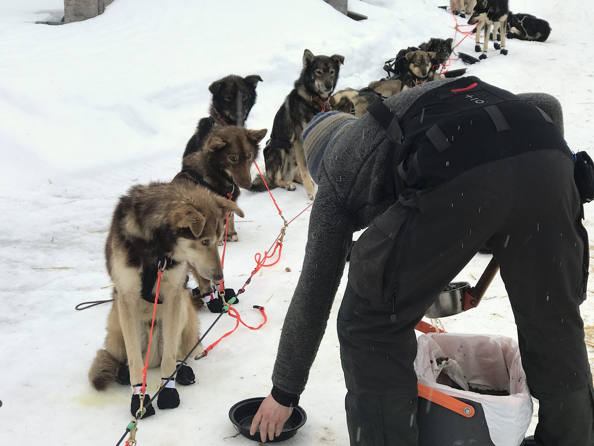
It’s a celebration of history, rural communities, athleticism and outdoor travel. It makes for [good radio] (http://www.knom.org/wp/blog/author/bmatheson/) (in my opinion) and gives me a space to play with rich spatial and performance data to hit that sweet spot in the venn diagram of “fun things I really like”, and “doing interesting data and web work.”
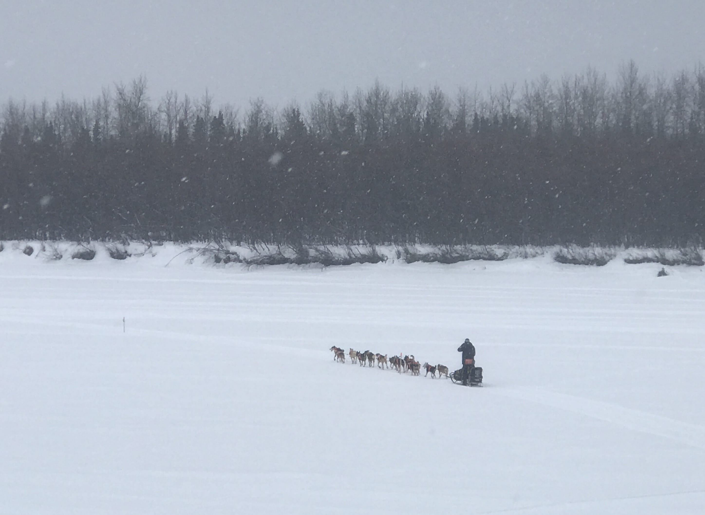
The satellite images
There is no prebaked web service of good winter imagery that I know of, so I made one. I downloaded dozens of Sentinel-2 images of the trail through the Sentinal Hub EO Browser. To find cloud-free scenes, I found a period in 2017 that had a few nice days of clear skies and snagged the best scenes I could find. Most satellite depictions of Alaska involve summer imagery and I was very glad to show the winter scenes that the dog mushers experience (although rarely in such fine weather).
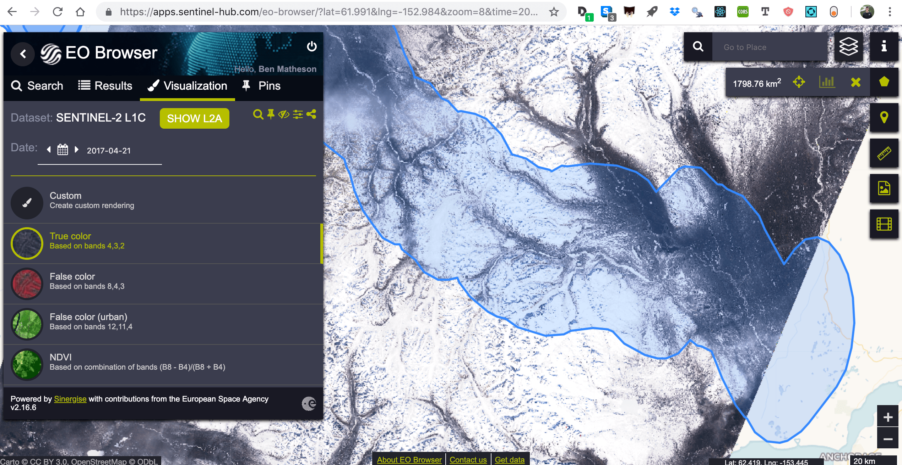
I stitched them together with gdal, creating a 650mb+ file. There surely is a better way, but this is how it came together for me.
gdal_merge.py --config CHECK_DISK_FREE_SPACE NO -co COMPRESS=DEFLATE -ul_lr
-18664504.8 9651906.9 -16615721.2 8650903.1 -o outSupplementTuesday.tiff 00001.tiff
00002.tiff 0001.tiff 0002.tiff 0003.tiff 0004.tiff 0005.tiff 0006.tiff 0007.tiff
0008.tiff 0009.tiff 00010.tiff 00011.tiff 00012.tiff 001.tiff 002.tiff 003.tiff
004.tiff 1.tiff 2.tiff 3.tiff 4.tiff 5.tiff 6.tiff 7.tiff 8.tiff 9.tiff 10.tiff
11.tiff 12.tiff 13.tiff 14.tiff 15.tiff 16.tiff 17.tiff 18.tiff 19.tiff 20.tiff 21.tiff 22.tiff
I uploaded this massive raster to Mapbox Studio.
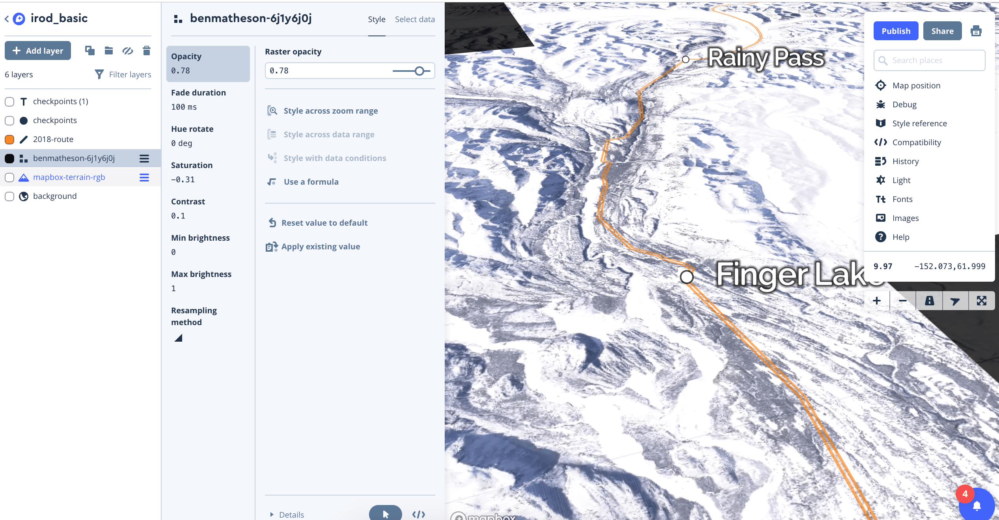
Within MapBox Studio, I added a…somewhat accurate…line feature of the trail route (it changes a bit year-to-year) and the ~25 small village checkpoints. Mapbox then does the hard work of slicing the images and features into several tiles that load only when users need to see them. I then used Mapbox-gl’s flyTo feature liberally in combination with a pitch setting to give a more 3D view of the horizon instead of looking straight down at the ground.
function regFly() {
map.flyTo({center: [newSumData[0].lon,newSumData[0].lat],
speed: .1,
curve: 0,
pitch: 80,
bearing: 270,
zoom:9.7,
duration: 10000})
}
I hooked up a couple buttons to manage the flying back and forth between checkpoints. But I wanted to have a few dashboard indicators of the race update as viewers progessed between checkpoints, so I went to snag the thousands of datapoints to illustrate it.
The Race Data
I scraped the Iditarod website’s many checkpoint html tables using rvest to build a database of each check-in and check-out time of all 67 mushers at all 25 checkpoints, along with the their run times, rest times, dog drops.
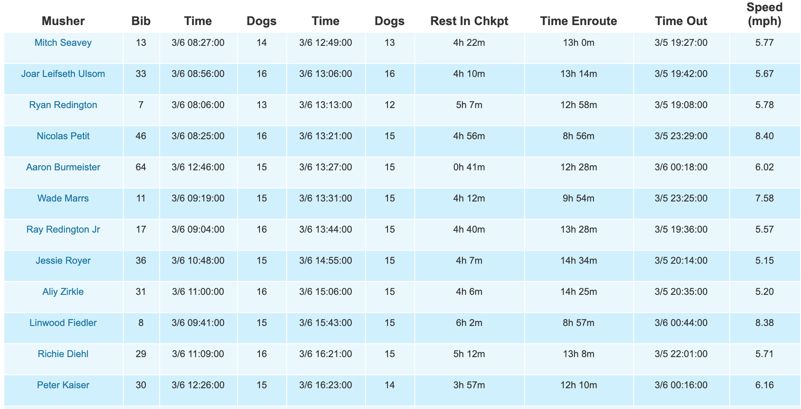
I was able to reuse..a bit..of code from my Iditarod visualization project last year, but this was a somewhat lengthy process unto itself after parsing the different flavors of times/dates and reshaping the data a few ways. Here’s one of the main scraping functions.
readCheck <- function(url) {
checkPage <- read_html(url, handle = curl::new_handle("useragent" = "Mozilla/5.0"))
checkData <- checkPage %>% html_nodes('table') %>% html_table(fill=T)
checkName <- checkPage %>% html_nodes('h1') %>% html_text()
checkName <- checkName[[3]]
checkDf <- as.data.frame(checkData)
ifelse(checkName %in% c("Ophir", "Kaltag"), checkDf <- checkDf[2:nrow(checkDf) ,2:12], checkDf <- checkDf[2:nrow(checkDf) ,3:12] )
names(checkDf) <- c("musher", "bib","intime","indogs", "outtime", "outdogs", "rest", "enroute","prev", "speed")
checkDf$checkName <- checkName
write_csv(checkDf, paste0("outCsv/",Sys.time(),"1.csv"))
checkDf}
###the full thing!!!
full2018 <- lapply(urls, readCheck) %>% bind_rows()
(The major missing piece is the actual GPS data. Mushers frequently rest their teams by camping outside checkpoints, so this is only a partial representation of the strategy beneath the surface).
I used R and the dplyr set of tools to do things like clean up the messy dates using the wonderful lubridate set of tools, and generate a set of summary stats for each checkpoint. These went into a few of the sidebar elements.
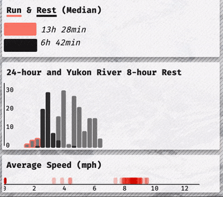
The D3 + Charts
I built a small dashboard looking at things like dropped dogs, run speeds, strategic breaks, and correlation between checkpoint place and final place. My vision was to have the charts update smoothly as the viewer flies between checkpoints and I need to push my D3 skills a bit to join and rejoin the data ~25 times throughout the fly-through experience.
It’s inspired by augmented reality (and I did experiment with a more futuristic transparent design), but it was never quite there.
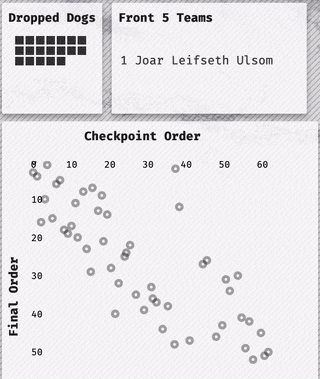
It was D3’s update feature that makes the transitions fun. Each circle is tied to an individual racer by using D3’s key function. When the user presses the next key, it runs a function that updates the data that is joined to each SVG (or html) element and transitions it over a portion of a second. There are 25 or so data joins in this way of doing things. I ended up on the same 2012 article by Mike Bostock that I’ve surely read 100 times by now.
//UPDATED SCATTER
const scat = d3.select('#right2').selectAll('g')
const c1 = scatterSvgG.selectAll('circle').data(newCpData, d=> d.bib)
c1.exit().remove()
c1.transition()
.duration(2000)
.ease(d3.easeExp)
.attr("cx", d=>scatterXScale(d.cpOrder))
.attr("cy", d=>scatterYScale(d.finalOrder))
It’s most certainly designed for desktop (might be a painful experience on any mobile device), but please enjoy [the final product!] (https://benmatheson.github.io/irodzoom/). And stay tuned for a different visualization of the 2019 data.